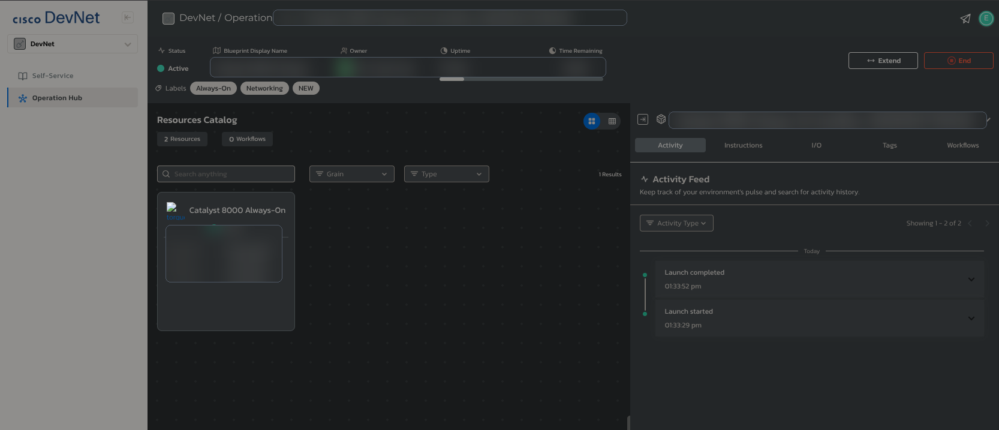

Learning automation
From a manual interface check to a repeatable Python workflow.
Network automation can sound complicated at the beginning. My approach is to start with a small, practical script that solves a real operational task and helps me understand every step.
This article walks through my first Cisco interface health check script. It connects to a Cisco IOS device, collects interface information, compares the current state with the previous run, and creates a simple health report.
Why this is useful
In daily network operations, interface status is one of the first things engineers check. A quick interface view can answer basic but important questions:
- Is an interface up or down?
- Has an interface changed since the last check?
- Was a new interface added?
- Was an interface removed?
- Did the IP address, status, or protocol state change?
Manually checking this is useful for learning, but automation helps make the check repeatable. This script creates a baseline on the first run and then compares later output against that saved state.
Cisco DevNet Sandbox
Learning automation without owning Cisco hardware
One reason this type of automation is easier to start today is Cisco DevNet Sandbox. Engineers do not always need physical Cisco hardware at home to practise basic automation workflows.
Cisco provides hosted sandbox environments that can be used for learning, testing, training, API practice, and small development projects. Some environments are Always-On, which makes them useful for quick practice sessions when the goal is to understand how tools like Python, Netmiko, RESTCONF, NETCONF, and IOS XE interact with network devices.

The tools are available
For this learning workflow, the main tools are available for free: Python, VS Code, Netmiko, TextFSM templates, GitHub, and Cisco DevNet Sandbox access. The hardest part is often not the cost of tooling, but making time to practise consistently.
Tools and setup
The script uses Python, Netmiko, python-dotenv, and TextFSM templates. Device details are loaded from environment variables rather than being written directly into the script.
Dependencies
netmiko
python-dotenv
ntc-templatesExample environment
NETMIKO_HOST=devnetsandboxiosxec8k.cisco.com
NETMIKO_USERNAME=your_username
NETMIKO_PASSWORD=your_password
NETMIKO_PORT=22
NETMIKO_DEVICE_TYPE=cisco_iosKeeping credentials outside the script is an important habit. Real usernames, passwords, tokens, and sandbox credentials should not be uploaded to GitHub.
Baseline and change detection
The core idea is simple: save the latest interface state, then compare the next run against the previous saved output.
try:
with open(latest_file_path, 'r') as file:
previous_state = file.read()
except FileNotFoundError:
previous_state = None
if previous_state is None:
change_status = 'BASELINE CREATED'
elif previous_state != latest_state:
change_status = 'CHANGE DETECTED'
else:
change_status = 'NO CHANGE TO PREVIOUS FILE'On the first run, the script creates the baseline. On later runs, it can identify whether the interface output changed and then record the result in a change log.
Report output
The script creates a report file inside the reports folder. The filename includes a timestamp so every run can produce separate evidence.
The report includes the date, hostname, device information, active interfaces, inactive interfaces, detected changes, and simple statistics.
====================
INTERFACE HEALTH REPORT
====================
Date: 2026-09-04 10:30:00
Hostname: Router1
====================
Active Interfaces: [...]
Inactive Interfaces: [...]
====================
CHANGES SECTION:
No detailed interface changes observed.
====================
STATISTICS
Active interfaces: 5
Inactive interfaces: 2
Health interfaces: 71.43%.Full script
The full learning script is included below. The latest project files are also available in my GitHub repository.
"""
Cisco Interface Health Check
This script connects to a Cisco IOS device using Netmiko,
collects interface status, compares it with the previous run,
and creates a simple health report.
"""
from netmiko import ConnectHandler
import os
from datetime import datetime
from dotenv import load_dotenv
load_dotenv()
def get_device_config():
device = {
'device_type': 'cisco_ios',
'host': os.getenv('NETMIKO_HOST'),
'username': os.getenv('NETMIKO_USERNAME'),
'password': os.getenv('NETMIKO_PASSWORD'),
'port': int(os.getenv('NETMIKO_PORT', 22))
}
return device
def connect_to_device(device):
""" Create a Netmiko SSH connection to the network device """
return ConnectHandler(**device)
def save_text_file(file_path, content, mode='w'):
""" Save a text content to a file. """
with open(file_path, mode) as file:
file.write(content)
def main():
# current script logic
device = get_device_config()
connection = connect_to_device(device)
if not device['host'] or not device['username'] or not device['password']:
raise ValueError("Missing device connection details. Please set NETMIKO_HOST, NETMIKO_PASSWORD and NETMIKO_USERNAME")
current_time = datetime.now().strftime('%Y-%m-%d %H:%M:%S')
file_time = datetime.now().strftime('%Y-%m-%d_%H-%M-%S')
os.makedirs('reports', exist_ok=True)
os.makedirs('logs', exist_ok=True)
report_filename = os.path.join('reports', f'interface_health_report_{file_time}.txt')
latest_file_path = os.path.join('logs', 'latest_interface_state.txt')
log_file_path = os.path.join('logs', 'change_log.txt')
interfaces = connection.send_command('show ip int brief', use_textfsm=True)
version = connection.send_command('show version | incl Processor board ID')
hostname_output = connection.send_command('show running | incl hostname')
hostname_part = hostname_output.split()
hostname = hostname_part[1]
latest_state = connection.send_command('show ip int brief')
change_status = ''
# compare previous and current state
def parse_interface_state(interface_text):
'''
withdraw information from latest state (raw variable), translate to lines, read from lines to the dictionary, grouping it
'''
interface_dict = {}
lines = interface_text.splitlines()
# starting from the second line in the block
for line in lines[1:]:
single_line = line.split()
if len(single_line) >= 6:
interface_name = single_line[0]
ip_address = single_line[1]
status = single_line[4]
protocol = single_line[5]
# condition for administratively down, status and protocol variables must be updated
if single_line[5] == 'administratively':
status = 'administratively down'
protocol = single_line[6]
interface_dict[interface_name] = {
'ip_address': ip_address,
'status': status,
'protocol': protocol
}
return interface_dict
try:
with open(latest_file_path, 'r') as file:
previous_state = file.read()
except FileNotFoundError:
previous_state = None
if previous_state is None:
change_status = 'BASELINE CREATED'
print('Baseline created.')
elif previous_state != latest_state:
print('Change detected - investigation required')
change_status = 'CHANGE DETECTED'
else:
change_status = 'NO CHANGE TO PREVIOUS FILE'
print('No change to previous file.')
observed_changes = []
if previous_state is not None:
previous_interfaces = parse_interface_state(previous_state)
current_interfaces = parse_interface_state(latest_state)
for interface in current_interfaces:
if interface not in previous_interfaces:
observed_changes.append(f"ADDED: {interface} with IP {current_interfaces[interface]['ip_address']}")
observed_changes.append(f"Status: {current_interfaces[interface]['status']}")
observed_changes.append(f"Protocol: {current_interfaces[interface]['protocol']}")
for interface in previous_interfaces:
if interface not in current_interfaces:
observed_changes.append(f"REMOVED: {interface} was previously IP {previous_interfaces[interface]['ip_address']}")
observed_changes.append(f"Status: {previous_interfaces[interface]['status']}")
observed_changes.append(f"Protocol: {previous_interfaces[interface]['protocol']}")
for interface in current_interfaces:
if interface in previous_interfaces:
old = previous_interfaces[interface]
new = current_interfaces[interface]
if old['ip_address'] != new['ip_address']:
observed_changes.append(
f"CHANGED: {interface} IP changed from {old['ip_address']} to {new['ip_address']}"
)
if old['status'] != new['status']:
observed_changes.append(
f"CHANGED: {interface} status changed from {old['status']} to {new['status']}"
)
if old['protocol'] != new['protocol']:
observed_changes.append(
f"CHANGED: {interface} protocol changed from {old['protocol']} to {new['protocol']}"
)
save_text_file(latest_file_path,latest_state)
save_text_file(log_file_path, f'{current_time} - {change_status} on {hostname} - show ip int brief\n', mode='a' )
active_int = []
inactive_int = []
# count interfaces
for interface in interfaces:
if interface['status'] == 'up' and interface['proto'] == 'up':
active_int.append(interface['interface'])
else:
inactive_int.append(interface['interface'])
active_count = len(active_int)
inactive_count = len(inactive_int)
total_int = len(interfaces)
health_interfaces_status = round(active_count / total_int * 100, 2)
if inactive_int == []:
inactive_int = 'INACTIVE INTERFACES NOT DETECTED.'
inactive_count = 0
report_lines = []
report_lines.append(20 * '=')
report_lines.append('INTERFACE HEALTH REPORT')
report_lines.append(20 * '=')
report_lines.append(f'Date: {current_time}')
report_lines.append(version) # device version
report_lines.append(f'Hostname: {hostname}') # device version
report_lines.append('\n')
report_lines.append(20 * '=')
report_lines.append(f'Active Interfaces: {active_int}')
report_lines.append(f'Inactive Interfaces: {inactive_int}')
report_lines.append('\n')
report_lines.append(20 * '=')
report_lines.append("CHANGES SECTION:")
if observed_changes:
for change in observed_changes:
report_lines.append(change)
else:
report_lines.append("No detailed interface changes observed.")
report_lines.append("")
report_lines.append(20 * '=')
report_lines.append('STATISTICS')
report_lines.append(f'Active interfaces: {active_count}')
report_lines.append(f' Inactive interfaces: {inactive_count}')
report_lines.append(f'Health interfaces: {health_interfaces_status}%.')
report_lines.append('\n')
report = '\n'.join(report_lines)
with open(report_filename, 'w') as file:
file.write(report)
print(report)
connection.disconnect()
if __name__=="__main__":
main()
What I learned and next improvements
This script helped me understand how Python can connect to a real network device, run show commands, store command output, create a baseline, compare later runs, and generate a basic report.
The most important lesson is that automation does not need to start as a large, complex platform. A small script that checks one operational area can already create useful evidence and build confidence.
Refactor functions
Move parser logic outside main() and split reusable helpers into separate modules.
Improve reliability
Add safer error handling and make sure the device session disconnects even if a command fails.
Support more devices
Extend the workflow from one learning device to multiple devices and device profiles.
Improve reporting
Export reports as Markdown, CSV, HTML, or dashboard-ready data.
Project on GitHub
A practical first step into Python network automation.
Open the Netmiko Lab repository to review the learning scripts, notes, requirements, and future improvements.
View Netmiko-Lab on GitHub